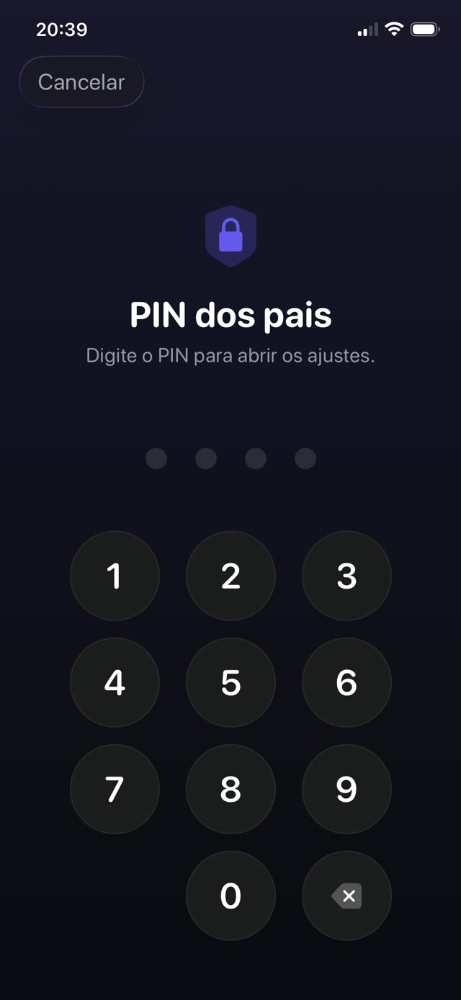

Primeiro a configuração, depois as portas, depois como fechá-las.


O jeito nativo: Tempo de Uso da Apple
No iPhone da criança, ou do seu próprio aparelho se o telefone estiver no seu grupo de Compartilhamento Familiar:
- Abra os Ajustes e toque em Tempo de Uso.
- Toque em Restrições de Conteúdo e Privacidade e ative.
- Use Limites de App para limitar categorias ou apps individuais, e Tempo Ocioso para as horas em que só funciona o que você permitir.
- Defina um código do Tempo de Uso diferente do código de desbloqueio do telefone, e que não seja uma data de nascimento.
- Dentro de Restrições de Conteúdo e Privacidade, bloqueie mudanças no código e nos ajustes da conta.
As brechas que as crianças realmente acham
Nenhuma exige conhecimento técnico. Todas circulam no pátio da escola:
- Apagar e reinstalar. Um limite preso a um app específico é contornado removendo e baixando de novo, a menos que você também restrinja a instalação de apps.
- O navegador. Bloquear o app do TikTok ou do YouTube não adianta se o Safari abre o mesmo site. Bloqueie a categoria ou restrinja o conteúdo da web também.
- Mudar o relógio. Alterar a data e a hora do aparelho pode confundir os limites, a menos que você bloqueie os ajustes de data e hora.
- Ver você digitar. O código é aprendido espiando por cima do ombro muito mais vezes do que sendo adivinhado.
- «Pedir mais tempo». Se as aprovações estão a um toque no seu telefone, você vai aprovar distraído, e o limite acabou.
O problema de fundo dos limites de tempo
Mesmo uma configuração perfeitamente vedada tem uma falha de projeto: quando o tempo acaba, nada mudou, exceto que seu filho agora está entediado e irritado com você. Bloquear cria um vazio. O que preenche esse vazio é uma negociação ou um contorno.
Por isso a configuração mais duradoura não só bloqueia: ela coloca algo do outro lado do bloqueio. Os apps não sumiram, estão atrás de uma tarefa que vale a pena fazer.
Bloquear com um propósito
O Guardian Reader usa por baixo o mesmo sistema Tempo de Uso da Apple, então o bloqueio é aplicado no nível do sistema operacional, não por uma extensão de navegador nem por um perfil que se apaga num toque. A diferença está no que desbloqueia.
Em vez de esperar um cronômetro vencer, seu filho digitaliza as páginas de um livro físico e as lê em voz alta, de uma vez. O app confere a leitura com o texto digitalizado e libera os minutos que você definiu. Quando eles acabam, os apps se bloqueiam sozinhos.
Como configurar
- Instale o Guardian Reader no iPhone da criança e abra.
- Permita o acesso ao Tempo de Uso quando for pedido; é a permissão da própria Apple.
- Escolha os apps ou categorias a bloquear: jogos, YouTube, TikTok, redes sociais, ou todos.
- Defina as páginas por sessão e os minutos conquistados.
- Crie um PIN dos pais. Ele é separado do código do telefone e do Face ID, porque o rosto cadastrado naquele iPhone é o do seu filho.
Por que o PIN não é o Face ID
Esse detalhe importa mais do que parece. No telefone de uma criança, a biometria é da criança, então qualquer «bloqueio dos pais» que abra com Face ID abre para ela. O Guardian Reader usa de propósito um PIN que só você sabe, com bloqueio temporário depois de várias tentativas erradas.